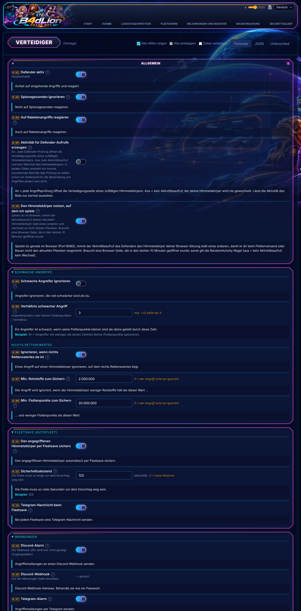

8.001 Defender aktiv Defender.Active
Achtet auf eingehende Angriffe und reagiert.
Defender, Schlafmodus, GhostSleep und Trümmerfeld-Sicherung.

Defender.ActiveAchtet auf eingehende Angriffe und reagiert.
Defender.IgnoreProbesNicht auf Spionagesonden reagieren.
Defender.DefendFromMissilesAuch auf Raketenangriffe reagieren.
Defender.RandomActivityAn = jede Angriffsprüfung öffnet die Verteidigungsseite eines zufälligen Himmelskörpers. Aus = kein Aktivitätsaufruf, der aktive Himmelskörper wird nie gewechselt. Lässt die Aktivität des Bots nur normal aussehen.
Defender.CurrentlyActiveCelestialActivitySpielst du gerade im Browser (Port 8080), nimmt der Aktivitätsaufruf des Defenders den Himmelskörper deiner Browser-Sitzung statt eines anderen, damit er dir beim Flottenversand oder Bauen nicht den aktuellen Planeten wegnimmt. Braucht eine Browser-Seite, die in den letzten 10 Minuten geöffnet wurde; sonst gilt die RandomActivity-Regel (aus = kein Aktivitätsaufruf, kein Wechsel).
Defender.IgnoreWeakAttackAngreifer ignorieren, die viel schwächer sind als du.
Defender.WeakAttackRatioEin Angreifer ist schwach, wenn seine Flottenpunkte kleiner sind als deine geteilt durch diese Zahl.
Beispiel: 10 = Angreifer mit weniger als einem Zehntel deiner Flottenpunkte ignorieren.
Defender.IgnoreAttackIfIHave.ActiveEinen Angriff auf einen Himmelskörper ignorieren, auf dem nichts Rettenswertes liegt.
Defender.IgnoreAttackIfIHave.MinResourcesToSaveDer Angriff wird ignoriert, wenn der Himmelskörper weniger Rohstoffe hält als dieser Wert ...
Defender.IgnoreAttackIfIHave.MinFleetToSave... und weniger Flottenpunkte als dieser Wert.
Defender.Autofleet.ActiveDen angegriffenen Himmelskörper automatisch per Fleetsave sichern.
Defender.Autofleet.SafetyMarginSecondsDie Flotte muss so viele Sekunden vor dem Einschlag weg sein.
Beispiel: 120
Defender.Autofleet.TelegramMessenger.ActiveBei jedem Fleetsave eine Telegram-Nachricht senden.
Defender.Discord.ActiveAngriffsmeldungen an einen Discord-Webhook senden.
Defender.Discord.WebhookUrlDiscord-Webhook-Adresse. Behandle sie wie ein Passwort.
Defender.TelegramMessenger.ActiveAngriffsmeldungen per Telegram senden.
Defender.Alarm.ActiveDie Meldung mit hoher Alarmstufe markieren, damit sie auffällt.
Defender.Alarm.SoundFileVollständiger Pfad zu einer WAV-Datei, die bei einem Angriff abgespielt wird (auf dem Rechner mit dem Bot). Leer, nicht vorhanden oder nicht abspielbar: wie bisher der Piepton.
Defender.WhiteListSpieler-IDs, die nie als Angreifer behandelt werden, zum Beispiel Freunde oder Allianzmitglieder.
Defender.SpyAttacker.ActiveDen Angreifer mit Sonden ausspionieren, wenn ein Angriff eingeht.
Defender.SpyAttacker.ProbesZahl der Sonden, die den Angreifer ausspionieren.
Defender.RaidWarning.ActiveWarnen (Telegram, Discord, Log), wenn derselbe Spieler dich in kurzer Zeit mehrfach ausspioniert. Das heißt meist, dass ein Angriff geplant wird.
Defender.RaidWarning.MissionsWarnen, wenn der Spieler mehr als so viele Spionageflüge schickt.
Defender.RaidWarning.WindowMinutesZeitfenster in Minuten. Höchstens eine Warnung je Spieler und Zeitfenster.
Defender.BackfireSpy.ActiveWird man von einem anderen Spieler ausspioniert, schickt der Bot eigene Sonden zum selben Spieler.
Defender.BackfireSpy.ProbesZahl der zurückgeschickten Sonden.
Defender.BackfireSpy.EveryHoursHöchstens einmal pro Spieler in dieser Zahl von Stunden.
Defender.MessageAttacker.ActiveDem Angreifer eine Nachricht schicken.
Defender.MessageAttacker.MessagesMögliche Nachrichten, eine pro Zeile. Der Bot sendet eine davon.
Defender.CheckIntervalMinKürzeste Pause in Minuten zwischen zwei Durchläufen dieser Funktion.
Defender.CheckIntervalMaxLängste Pause in Minuten zwischen zwei Durchläufen. Der Bot wählt eine zufällige Zeit zwischen Minimum und Maximum, damit er nicht wie eine Uhr arbeitet.